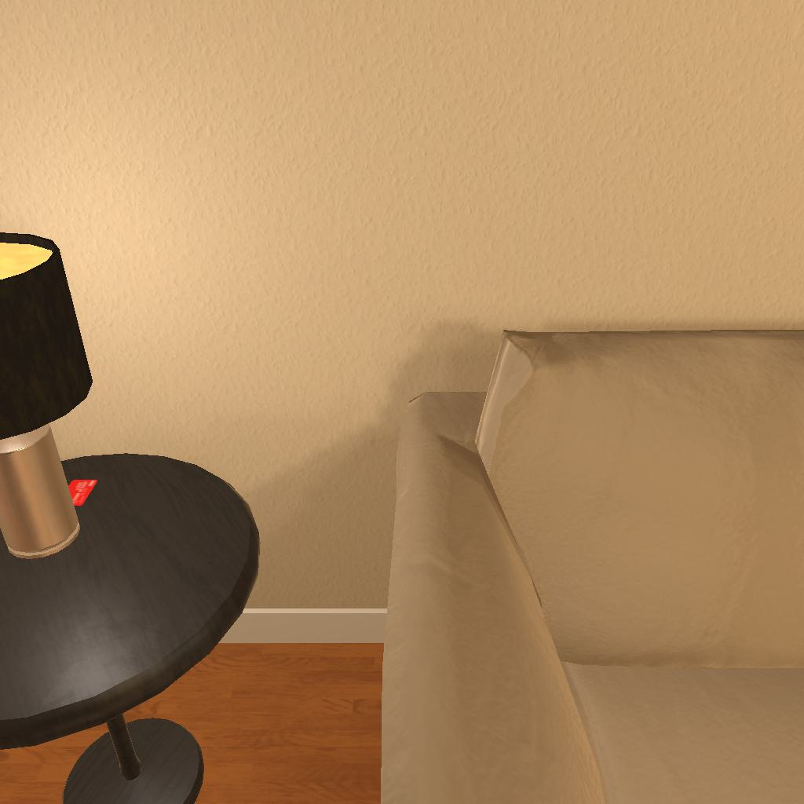
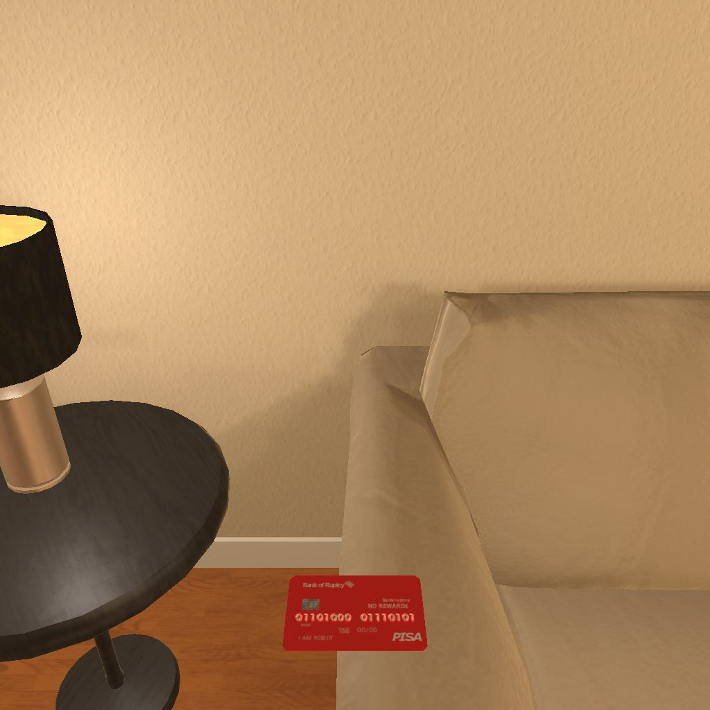

---------------------------------------------------------task: 7---------------------------------------------------------
--------------------------------------------------------------------------------------------------------------------------------------------------------------------
--------------------------------------------------------------------------------------------------------------------------------------------------------------------
Step:--------------------------------------------------------------------------7-------------------------------------------------------------------------------
----------------------------------------
VLM Prompt:
Image1:
Image2:
Image3:
**Instruction**
1. Analyze the provided images to identify all visible household objects and compare the difference between images (e.h. whether the object is opened or not and taken on hand or not), focusing on those relevant to the task description "put a creditcard in coffeetable."
2. Use the analysis of images and the task hint "The agent must find an object of the desired type, pick it up, find the correct location to place it, and put it down there." to answer the question: what is the most reasonable action in the choices for the task description "put a creditcard in coffeetable"?
3. Decide and write the answer using the template: The answer is: (i): , where i is the real number. If there is no desired object in images, search every place based on **Initial Observation** to find the object. And if no one is exactly correct, choose a similar answer.
**Initial Observation**
You are in the middle of a room. Looking quickly around you, you can see armchair (1-2), dresser (1), garbagecan (1), cabinet (1-4), drawer (1-4), coffeetable (1), sidetable (1), sofa (1)
**Answer Choices**
(1): go to armchair 1
(2): go to armchair 2
(3): go to dresser 1
(4): go to garbagecan 1
(5): go to cabinet 1
(6): go to drawer 1
(7): go to drawer 2
(8): go to cabinet 2
(9): go to drawer 3
(10): go to cabinet 3
(11): go to drawer 4
(12): go to cabinet 4
(13): go to coffeetable 1
(14): go to sofa 1
(15): put creditcard 2 in/on sidetable 1
(16): examine creditcard 2
(17): examine sidetable 1
**Answer**
Let's think step by step by following the instructions.
----------------------------------------
----------------------------------------
Original Response:
Image Analysis:
- In all three images, we can see a sidetable with a lamp on top and a creditcard placed on it.
- There are no significant differences between the images except for the visibility of the creditcard number in Image2 and Image3.
Task Description Analysis:
- The task is to put a creditcard in the coffeetable.
Based on the initial observation, the coffeetable is mentioned as one of the visible objects in the room.
Answer Choices Analysis:
- Choices (1) to (12) involve going to various pieces of furniture that are not relevant to the task, as the creditcard is already visible on the sidetable.
- Choice (13) involves going to the coffeetable, which is relevant to the task.
- Choices (14) to (17) are actions related to the creditcard or sidetable but do not complete the task of putting the creditcard in the coffeetable.
The most reasonable action to complete the task is to first go to the coffeetable and then put the creditcard on it. However, as the action of putting the creditcard on the coffeetable is not explicitly listed, the closest action that aligns with the task description is to go to the coffeetable.
The answer is: (13): go to coffeetable 1
----------------------------------------
----------------------------------------
>>> Refine Original VLM Response and Get Pure Action: go to coffeetable 1
----------------------------------------
-----------------------------------------------------------------
Running time: 14.872841596603394 seconds
Total Money: 3.1254400000000007
-----------------------------------------------------------------
-----------------------------------------------------------------
Text Observation:You arrive at loc 12. On the coffeetable 1, you see a box 1, a remotecontrol 1, and a lightswitch 1.
-----------------------------------------------------------------
UNSUCCEED